Our Boat Design
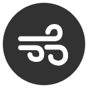
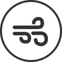
Sail
The sail is trimmed and eased through a new rigging system that reflects traditional sailboats, as opposed to directly turning the mast.
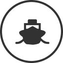
Deck & Hull
The hull is composed of a fiberglass layup with carbon fiber reinforcements, and the deck has a wood core also incorporating fiberglass. It is finished off with a bright red gel coat, leading to its name “Redfourty”.
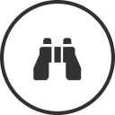
Camera
Our new camera has two cameras, used to capture two different points of an object. Using trigonometry on the two points of reference, we can determine the distance away from an object, a function we use for the “search” event in competition.
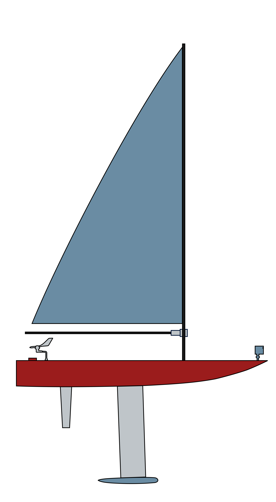
Motor Control
The motor control system features two servo motors. One servo motor is used for controlling the sail trim: it uses a string to pull in and release the sail. The other servo motor is connected to the rudder, used for changing the boat’s direction.
Ballast
The ballast is the lowest point of the boat, and adds weight to lower the boat’s center of gravity. When wind blows against the boat, the ballast provides a righting moment for the boat to rebalance.
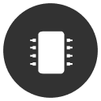
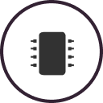
Electronics
Two highlights of our electronics setup include a printed circuit board (PCB) and a MiniPC. Our newly designed PCB serves as a DC-DC voltage stepper, is a breakout board for our microcontroller, and integrates a step-down (buck) converter to regulate input voltages. The MiniPC acts as the brains of our boat by running our boat software, an upgrade that provides more computing power for our computer vision inference.
Our Fleet
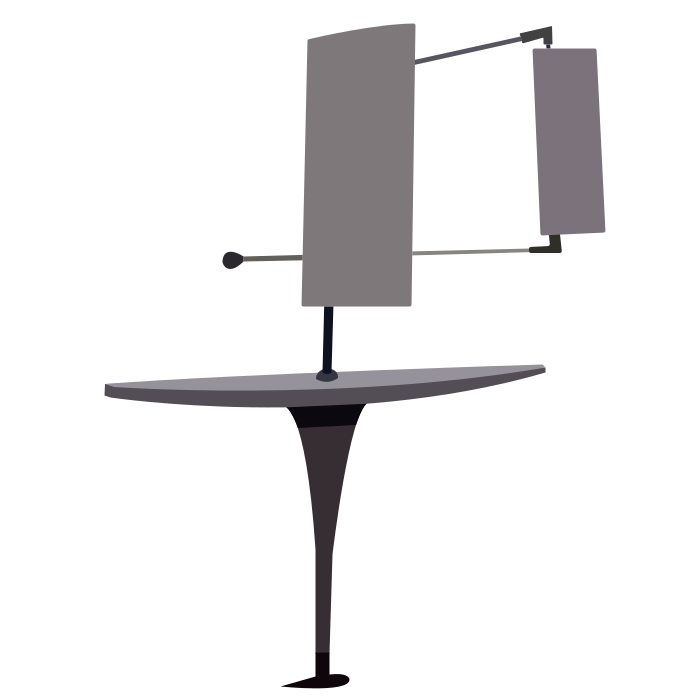
SailVane IV, "Felicia"
2018-2019
SailVane IV was our second boat whose deck and hull exceed a meter in length. SailVane IV had multiple removable sail skeleton mounts, which was both more durable and optimized than SailVane III's removable sails. SailVane IV also featured a 3-D printed mast step, brass ballast, and stronger, sturdier keel.
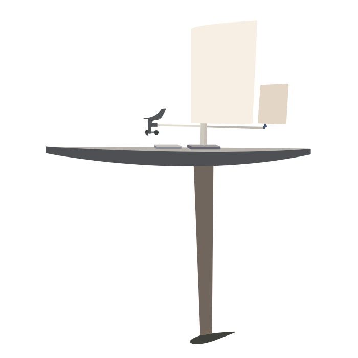
SailVane III, "Fiona"
2017-2018
SailVane III doubled in size to 2 meters to increase the boat's speed. The boat also had increased modularity of parts and and better integration with the navigation team. In this new design, the ballast and keel could be removed for ease of transportation and freedom to change sizes or weights. Both the main sail and tail could also be interchanged easily to reflect the wind conditions.
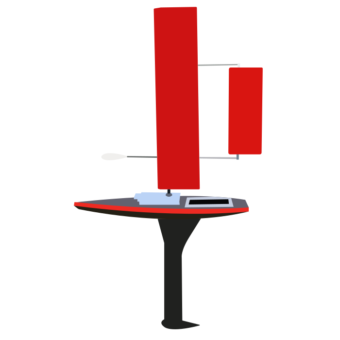
SailVane II
2016-2017
SailVane II was the product of CUSail's first year as a project team. For the first time, the deck, hull,
and keel
were made completely from carbon fiber opposed to fiber glass in order to decrease weight yet increase
strength.
A new system of rubber-mold and acrylic-channel hatches were implemented to both increase waterproofing
reliability and ease taking in and out the electronics boxes from inside the boat.
For the first time, a PixyCam was fixed to the front of the deck to give our boat vision and allow us to
detect buoys and avoid other sailboats.
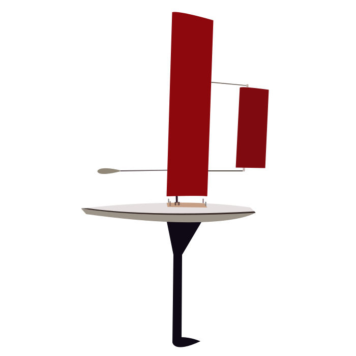
SailVane I
2015-2016
SailVane I was the first boat created by CUSail. This sailboat successfully implemented
the idea to eliminate the need for a rudder by adding a second 'tail' sail.
Using a combination of sensors, such as GPS, inertial measurement unit, and a magnetic
rotary sensors, and a short term navigation algorithm, SailVane 1 was able to take its maiden voyage.
A microcontroller allows for communication between the sensor array, the navigation algorithm,
and the control system which communicates to servo motors that rotate the sail and tail to appropriate
angles.